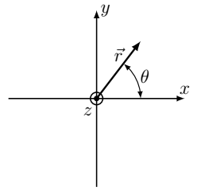

X26 (2026) — English translation
The spontaneous rotation of small spherical and cylindrical objects immersed in liquid dielectrics and exposed to strong electrostatic fields was first recorded by Georg Quincke in 1896. In his experiments, Quincke used glass balls and cylinders suspended on silk threads. Currently, this effect has been reproduced for liquid droplets and dielectric balls floating in a conducting liquid.
In the entire problem we will use a cylindrical coordinate system $r, \theta, z$, the axis $z$ of which is directed along the axis of symmetry of the cylinder, $r$ is the distance from the point to the cylinder axis, and $\theta$ is the angle in the plane perpendicular to the axis. The vector $\vec{r}$ is perpendicular to the axis $z$ and directed from the axis to the point in question. Cartesian coordinates $x$ and $y$ are also used, in this case the $x$ axis corresponds to $\theta = 0$, and the $y$ axis corresponds to $\theta = \pi/2$. The electrical constant $\varepsilon_0$ can be used throughout the problem.
In the entire problem we will use the cylindrical coordinate system $r, \theta, z$, the axis $z$ of which is directed along the axis of symmetry of the cylinder, $r$ is the distance from the point to the cylinder axis, and $\theta$ is the angle in the plane perpendicular to the axis. The vector $\vec{r}$ is perpendicular to the axis $z$ and directed from the axis to the point in question. Cartesian coordinates $x$ and $y$ are also used, in this case the $x$ axis corresponds to $\theta = 0$, and the $y$ axis corresponds to $\theta = \pi/2$. The electrical constant $\varepsilon_0$ can be used throughout the problem.

Consider a long homogeneous non-conducting cylinder of a substance with dielectric constant $\varepsilon_1$, placed in an infinite medium with dielectric constant $\varepsilon_2$. The axis of symmetry of the cylinder coincides with the axis $z$, the radius of the cylinder $R$, length $L \gg R$. The external uniform electric field $\vec{E}_0$ is directed perpendicular to the axis of symmetry of the cylinder. Neglect all edge effects associated with the finite length of the cylinder.
Note: in a conducting medium, the volumetric current density is related to the electric field by the relation $\vec{j} =\lambda \vec{E}$, where $\lambda$ is the conductivity of the medium.
Note: boundary conditions for the normal components of the electric field can be obtained by considering the normal components of the current density at the boundary of the cylinder and the medium. There are no surface currents flowing through the cylinder.
Let the cylinder from the previous part rotate with angular velocity $\omega$ around its axis. We assume that $\omega> 0$ if the angular velocity is directed along the axis $z$. The positive direction of angle $\theta$ coincides with the direction of rotation of the cylinder. The conductivity of the cylinder is $\lambda_1$, and the conductivity of the medium is $ \lambda_2$, the dielectric constant of the cylinder is $\varepsilon_1$, and the medium is $\varepsilon_2$. In a medium at a large distance from the cylinder, a uniform external electric field $\vec{E}_0$ is created, the direction of which corresponds to $\theta = 0$. In all subsequent paragraphs of the problem, accept the following assumptions: In steady state, the charge is stationary distributed in space relative to the laboratory frame of reference. The currents considered in the problem are quite small, so completely neglect the magnetic field.
Let the cylinder from the previous part rotate with angular velocity $\omega$ around its axis. We assume that $\omega> 0$ if the angular velocity is directed along the axis $z$. The positive direction of angle $\theta$ coincides with the direction of rotation of the cylinder. The conductivity of the cylinder is $\lambda_1$, and the conductivity of the medium is $ \lambda_2$, the dielectric constant of the cylinder is $\varepsilon_1$, and the medium is $\varepsilon_2$. In a medium at a large distance from the cylinder, a uniform external electric field $\vec{E}_0$ is created, the direction of which corresponds to $\theta = 0$.
In all subsequent paragraphs of the problem, make the following assumptions:
Let us consider the boundary of a cylinder and a liquid. The quantities related to the inside of the cylinder will be denoted by index 1, and the quantities outside the cylinder by index 2. The normal ($n$) and tangential ($\tau$) components of the electric field will be denoted by $E_{1n}$, $E_{2n}$, $E_{1\tau}$, $E_{2\tau}$, respectively. The positive direction of the normal is outward. Due to the external current, free charges with a surface density $\sigma_f(\theta)$ accumulate on the surface of the cylinder. The answers to all points in this part may include the conductivities and dielectric constants of these media.
Let's move to the rotating reference frame of the cylinder. In this reference frame, the electric field acting on the cylinder rotates clockwise: $$ \vec{E} = E_0 (\vec{e}_x \cos \omega t - \vec{e}_y \sin \omega t ). $$Далее удобно использовать комплексную запись $$ \vec{E} =\operatorname{Re}[\vec{E}_0^* e^{-i \omega t}],$$где $\vec{E}_0^*$ – комплексная амплитуда электрического поля. Для рассматриваемого поля она имеет вид $\vec E_0^*=E_0(\vec e_x-i\vec e_y)$. Направление осей $x$, $y$ указано в начале задачи. Аналогичным образом можно записать однородное электрическое поле внутри цилиндра $\vec{E}_1$ и его линейную плотность дипольного момента: $$ \vec{E_1} = \operatorname{Re}[\vec{E}_1^* e^{-i \omega t}], \quad \vec{p} = \operatorname{Re}[\vec{p}^{*} e^{-i \omega t}]. $$Аналогично можно записать уравнения для любой компоненты поля в любой точке. Тогда оказывается, что граничные условия из пункта B3 можно переписать в виде \[\varepsilon_1^*(\omega)E_{1n}^*=\varepsilon_2^* (\omega)E_{2n}^*,\]где $\varepsilon_1^*(\omega)$, $\varepsilon_2^*(\omega)$ – complex dielectric constants.
\[ \varepsilon_1^* = \varepsilon_1 + \frac{i \lambda_1}{\varepsilon_0 \omega}, \quad \varepsilon_2^* = \varepsilon_2 + \frac{i \lambda_2}{\varepsilon_0 \omega}.\]
Further, these formulas can be used without proof.
Note: Since the cylinder rotates with angular velocity $\omega$, $d\theta/dt = + \omega$ and the angular derivative $\theta$ can be expressed in terms of the time derivative in the rotating frame.
Thus, the form of the boundary conditions will formally coincide with the boundary conditions for a stationary cylinder. Therefore, the expressions for $\vec{E}_1^*$ and $\vec{p}^*$ can be obtained from the expression for the dipole moment of the cylinder from A4, formally replacing the dielectric constants with complex values.
Since the complex amplitude $\vec{p}^*$ differs from $\vec{E}_0^*$ only by the common complex factor, the dipole moment of the cylinder is rotated at a constant angle relative to the electric field. This means that in the laboratory frame of reference the dipole moment of the cylinder is constant. It is convenient to calculate it at time $t = 0$, when the rotation angle is 0.
The dipole moment found above matches the actual dipole moment of the cylinder and the polarization charges of the fluid around it, so it can be used to calculate the moment of forces.
The maximum angular velocity to which the cylinder can accelerate is limited by viscous friction forces. Let the viscosity of the fluid surrounding the cylinder be $\eta$. Let us determine the projection of the moment of viscous friction forces onto the axis $z$, $M_\eta$. The cylinder can still be considered very long, $L \gg R$. Angular speed of rotation of the cylinder $\omega$. Consider the distribution of fluid velocities at each moment of time to be steady.
In steady motion, the fluid velocity $v(r)$ at each point is directed tangentially to a circle centered on the cylinder axis passing through the point in question. The magnitude of the speed depends only on the distance to the cylinder axis. For the convenience of calculating the viscous force, we introduce the angular velocity of the fluid $\omega(r)$ using the relation $v(r) =r \omega(r)$. Then the shear stress (i.e. the ratio of tangential force to area) created by the viscous forces is equal to $$\tau_{\theta z} = \eta r \frac{\partial \omega(r)}{\partial r}. $$
Source: https://pho.rs/p/4810